Online · Ver quando quiseres
Biblioteca de Sessões Gravadas
Três anos de conversas sobre sexualidade, feminismo e temas queer, para veres ao teu ritmo.
Durante três anos dinamizei a Young Cycles, uma comunidade online sobre sexualidade, feminismo e temas queer. Todos os meses tínhamos quatro sessões: um webinar, um debate, uma sessão com uma pessoa convidada e uma sessão de Q&A. As sessões foram gravadas e agora podes vê-las quando e onde quiseres.

Tópicos abordados
A comunidade
O que vais encontrar
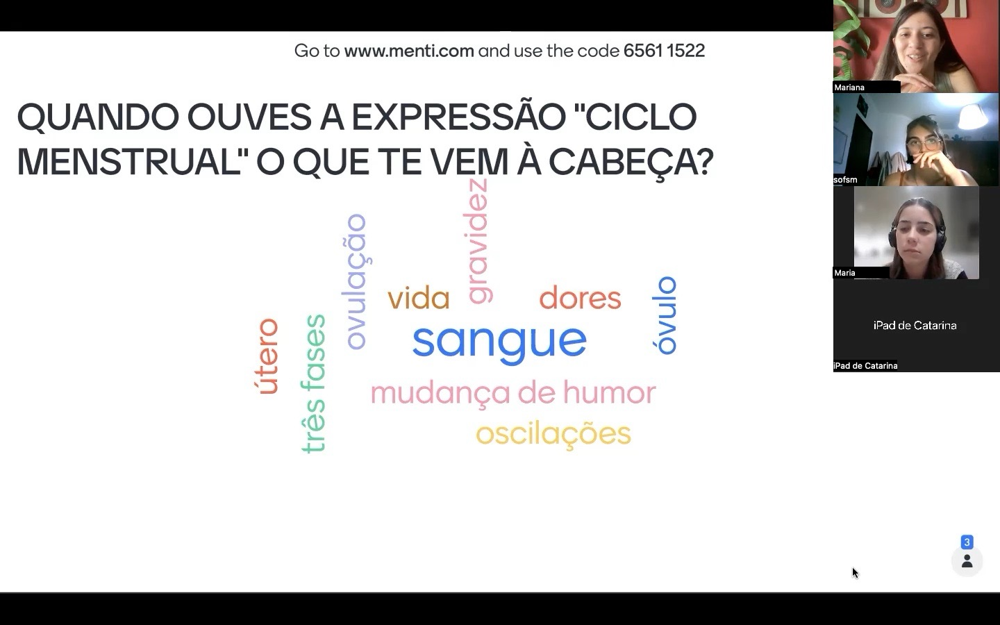
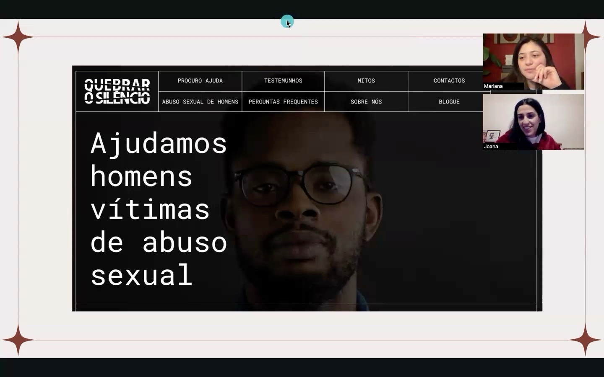
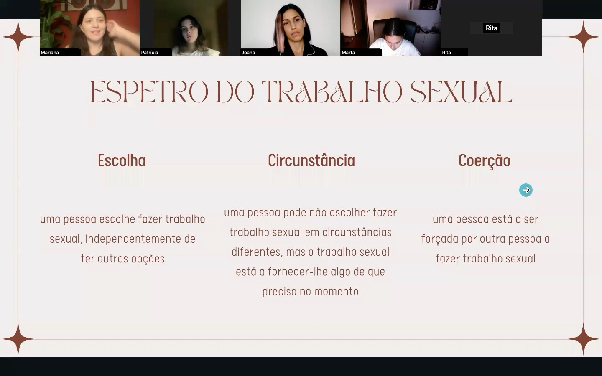
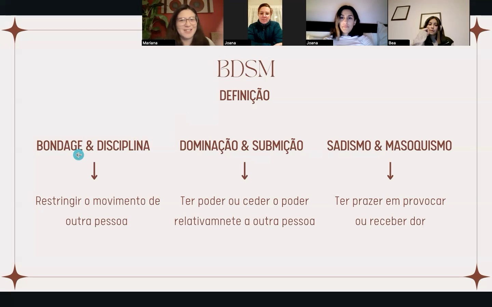
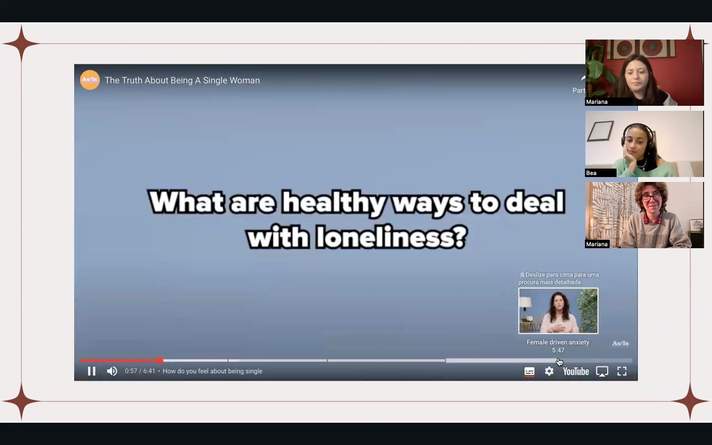
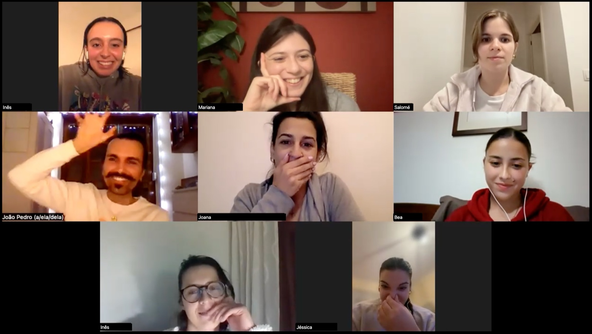
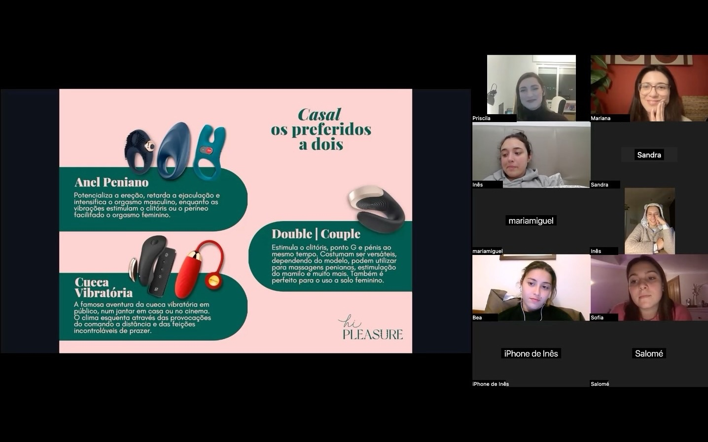
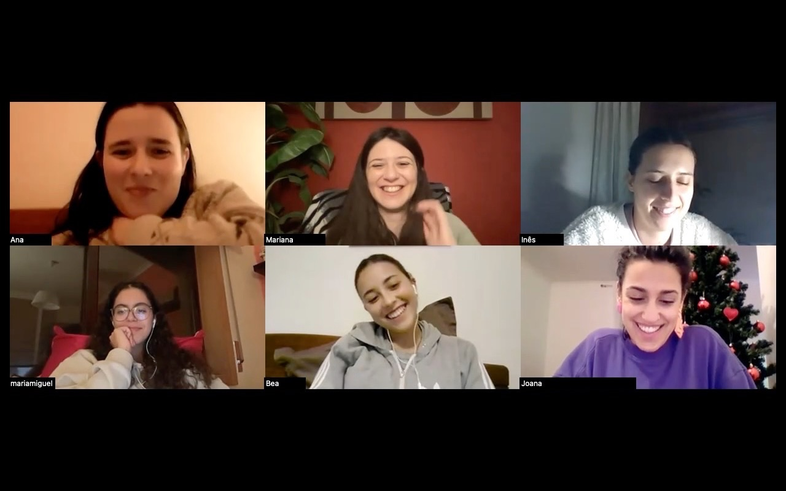
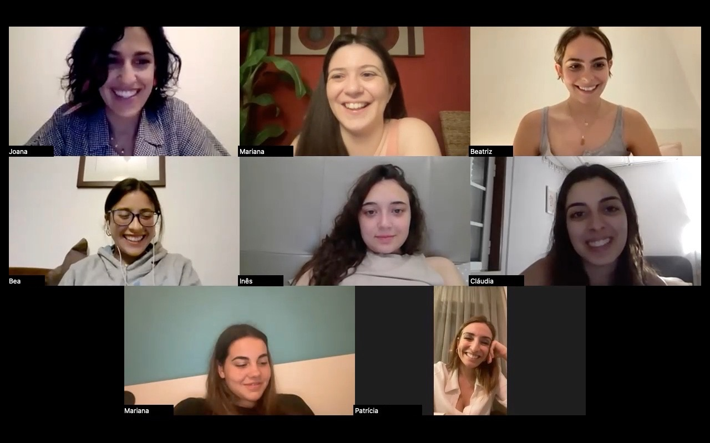
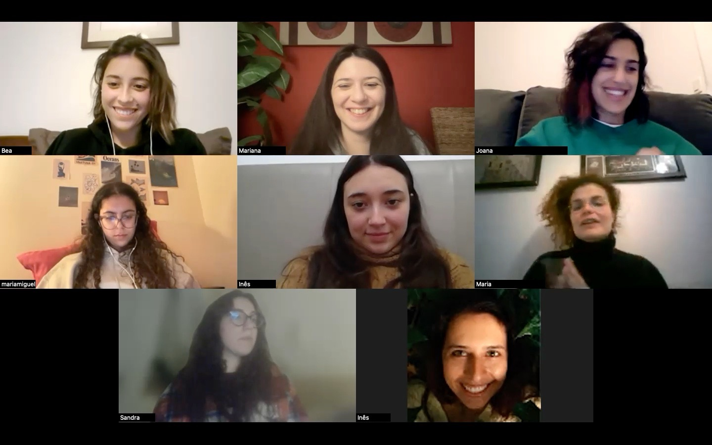
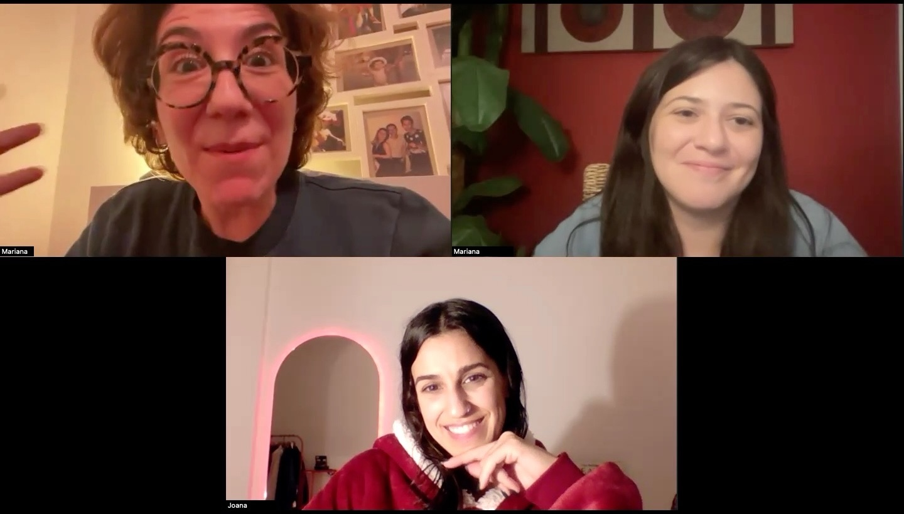
Testemunhos
O que diz quem fez parte
Estar nestas sessões foi muito melhor do que pensava, tudo o que é falado é imensamente importante, sinto até que devia ser lecionado em escolas por exemplo! Acho que todas as pessoas deviam passar por algumas sessões contigo e aprenderiam muito! (…) Com a nossa convidada e com as nossas conversas aprendi mais do que em todos os posts que tentei ler haha adorei mesmo a experiência e muito obrigada de coração!
Eu gostei imenso da experiência na comunidade. O tema por si só é interessante e a forma como foi dinamizado fez sentido e senti que foi um lugar seguro para falar e expor dúvidas. Posso-te dizer que há pouco tempo identifiquei-me/assumi-me como bissexual e ajudou-me a conhecer vários temas de melhor forma. Com certeza vamos ver-nos mais vezes por lá.
Querida Mariana. Adorei. Muito muito fixe. É uma cena muito diferente do meio em que estou, mas eu adoro saber coisas e aprender. Adorei. E honestamente, tens mesmo jeito para isto! Porque normalmente quando se fala destes assuntos é quase uma ofensa dizer que não se sabe, que se pensa de outra maneira, etc… mas tu não. Estás à vontade para explicar tudo, perceber que há pessoas que podem mesmo não estar informadas e tens abertura para discutir sobre o assunto!! Foi mesmo bom. Obrigada!
Pertencer a esta comunidade tem sido uma experiência super enriquecedora. Não há palavras para descrever o conforto e a amizade que existe entre nós todas. Cada vez mais me sinto mais confiante e segura com o conhecimento que adquiro. A Mariana é incrível, sempre disponível, muito querida e prestável.
Entrei para a comunidade Soulful Cycles em outubro de 2022 e estava longe de imaginar o quão preponderante seria em todo o meu percurso de vida. (…) Posso dizer com toda a certeza que a Soulful Cycles me permitiu aprender uma data de coisas sobre diversos assuntos, questionar a realidade e treinar o meu espírito crítico. Graças a esta comunidade amadureci muito, conheci outras pessoas com valores que se enquadram nos meus e cresci como ativista. Muitas saudades das nossas “tertúlias”! Parabéns por este projeto, Mariana. Nunca o deixes morrer!
Perguntas frequentes
Sobre a biblioteca
Como tenho acesso à Biblioteca de Sessões Gravadas?
Envia-me mensagem no Instagram e dou-te acesso. Custa 10€ por mês, sem fidelização.
Posso cancelar quando quiser?
Sim. Não há fidelização: podes ficar só um mês, se quiseres.
Tenho de ver as sessões a uma hora certa?
Não. As sessões estão gravadas, por isso vês quando e onde quiseres.
Contacto